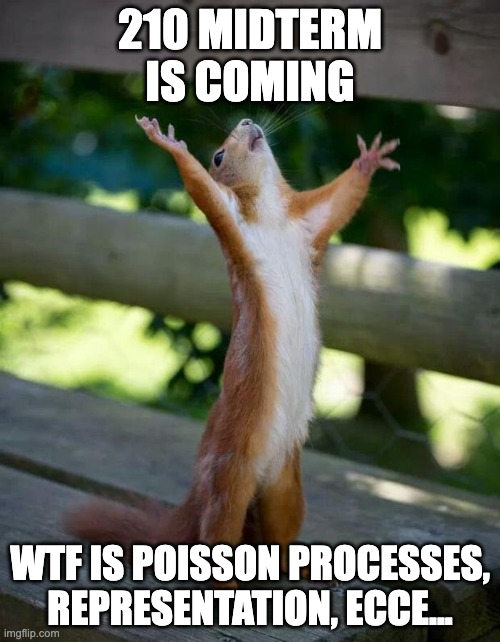

Section 5
Last Updated: 13 Oct 2023
Date: 12 Oct 2023
Introduction
In this section, we will discuss:
- All about Expectation
Expectation
Definition 1 (Expectation) For a discrete random variable \(X\) taking on values \(x_1, x_2, \cdots\), \[E(X)=\sum_{j=1}^{\infty} x_i P(X=x_i).\] For a continuous random variable, the expectation \(E(X)\) is given by the Riemann Intergral \[E(X)= \int_{-\infty}^{\infty} xf(x) dx\]
To have a unified definition of expected values, and for proving results about expected values, it is helpful to define \(E\) in stages for increasingly more general r.v.s. This parallels the construction of the Lebesgue integral.
Definition 2 (InSiPoD) Let \((\Omega, \mathcal{F}, P)\) be a probability space, and let \(X: \Omega \rightarrow \mathbb{R}\) be a random variable. Then the expected value of \(X\), denoted \(\mathbf{E}[X]\) is defined by the following three-step construction: \({ }^{14}\)
For indicator random variables, which are simply 1 on a bounded measurable set \(S \in \mathcal{F}\) and 0 otherwise. Their expectation is the measure \(P(S)\).
Extending to non-negative weighted sums of indicator random variables, called simple random variables. We do this by linearity of expectation.
Defining for non-negative random variables by taking the supremum over all dominated simple random variables \(X^*\), \[ \mathbf{E}[X]=\sup _{X^* \leq X} \mathbf{E}\left[X^*\right] . \]
Extending to general signed random variables by taking a partition \(X=X^{+}-X^{-}\)into positive and negative parts, and computing the integral for each separately.
Definition 3 (Linearity of Expectation) Expectation \(E\) is linear: for any r.v.s \(X\) and \(Y\), \[E(X+Y)=E(X)+E(Y).\]
Definition 4 (Fatou’s Lemma) Let \(X_1, X_2, \cdots\) ve nonnegative r.v.s. Then \[E(\lim \inf_{n\rightarrow\infty}X_n) \leq \lim \inf_{n\rightarrow\infty}EX_n\]
Variance, Covariance, and Correlation
Definition 5 (Variance and Standard deviation). The variance of \(X\) is \[Var(X)\equiv E((X-E(X))^2),\] and the standard deviation is simply denoted as \(SD(X)=\sqrt(Var(X))\).
Definition 6 (Covariance and Correlation). The covariance of \(X\) and \(Y\) is \[Cov(X,Y)\equiv E((X-E(X))(Y-E(Y))).\] and correlation is defined as \[Cor(X,Y)\equiv Cov \left( \frac{X-EX}{SD(X)},\frac{Y-EY}{SD(Y)} \right)\]
Adam, Eve and EECE
Definition 7 (Adam’s Law) We denote Adam’s law in Stat 110 and Stat 210 as \[E(E(Y|X))=E(Y)\]
Definition 8 (Conditional Variance) Conditional Variance can be defined as \[Var(Y|X)=E((Y-E(Y|X))^2|X)=E(Y^2|X)-E^2(Y|X)\]
Definition 9 (Eve’s Law) We denote Eve’s law in Stat 110 and Stat 210 as \[Var(Y)=E(Var(Y|X))+Var(E(Y|X)).\]
Definition 10 (ECCE) ECCE is a common term that describe \[Cov(Y_1, Y_2)=E(Cov(Y_1,Y_2|X))+Cov(E(Y_1|X, E(Y_2|X))\]
Section Discussion Questions
✏️ Section Problem 1
Let \(X_1, X_2\) and \(Y\) be random variable, \(E(Y^2)\) finite. Let \[A=E(Y|X_1) \text{ and } B=E(Y|X_1,X_2)\] Show that \[Var(A) \leq Var(B)\]
By Eve’s Law, \[Var(B) \geq Var(E(B|X_1))\]
By Adam’s Law, \[E(B|X_1)=E(E(Y|X_1, X_2)|X_1)=E(Y|X_1)=A\]
Thus, \[Var(B)\geq Var(E(B|X_1))=Var(A).\]
✏️ Section Problem 2
Let \(X, Y, Z\) be random variables with finite variances, such that \[ E(Y \mid X, Z)=\beta_0+\beta_1 X+\beta_2 Z, E(Z \mid X)=\alpha_0+\alpha_1 X . \]
Find a fully simplified expression for \(E(Y \mid X)\).
Assuming for this part only that \(X\) and \(Z\) are independent, exhibit the equality of variances: \(\operatorname{Var}(E(Y \mid X, Z))=\operatorname{Var}(E(Y \mid X))+\operatorname{Var}(E(Y \mid Z))\).
By Proposition 5.7.1 and taking out what’s known, we can compute \[ \begin{aligned} E(Y \mid X) & =E(E(Y \mid X, Z) \mid X) \\ & =E\left(\beta_0+\beta_1 X+\beta_2 Z \mid X\right) \\ & =\beta_0+\beta_1 X+\beta_2 E(Z \mid X) \\ & =\beta_0+\beta_1 X+\beta_2\left(\alpha_0+\alpha_1 X\right) \\ & =\left(\beta_0+\beta_2 \alpha_0\right)+\left(\beta_1+\beta_2 \alpha_1\right) X . \end{aligned} \]
By Proposition 5.7.1 and taking out what’s known, we can similarly compute \[ \begin{aligned} E(Y \mid Z) & =E(E(Y \mid X, Z) \mid Z) \\ & =E\left(\beta_0+\beta_1 X+\beta_2 Z \mid Z\right) \\ & =\beta_0+\beta_1 E(X \mid Z)+\beta_2 Z \\ & =\beta_0+\beta_1 E(X)+\beta_2 Z, \end{aligned} \] where the last line follows from \(X \perp\!\!\!\!\perp Z\). Then, since \(\beta_0+\beta_1 E(X)\) is a constant, \[ \begin{aligned} \operatorname{Var}(E(Y \mid Z)) & =\operatorname{Var}\left(\beta_0+\beta_1 E(X)+\beta_2 Z\right) \\ & =\operatorname{Var}\left(\beta_2 Z\right) \\ & =\beta_2^2 \operatorname{Var}(Z) . \end{aligned} \]
Now, given \(X, \beta_0+\beta_1 X\) is constant, and this very fact, along with \(X \perp\!\!\!\!\perp Z\), yields \[ \begin{aligned} \operatorname{Var}(E(Y \mid X, Z) \mid X) & =\operatorname{Var}\left(\beta_0+\beta_1 X+\beta_2 Z \mid X\right) \\ & =\operatorname{Var}\left(\beta_2 Z \mid X\right) \\ & =\beta_2^2 \operatorname{Var}(Z) \end{aligned} \]
With the totality of the results above, we can then use Eve’s law to conclude that \[ \begin{aligned} \operatorname{Var}(E(Y \mid X, Z)) & =\operatorname{Var}(E(E(Y \mid X, Z) \mid X))+E(\operatorname{Var}(E(Y \mid X, Z) \mid X)) \\ & =\operatorname{Var}(E(Y \mid X))+E\left(\beta_2^2 \operatorname{Var}(Z)\right) \\ & =\operatorname{Var}(E(Y \mid X))+\beta_2^2 \operatorname{Var}(Z) \\ & =\operatorname{Var}(E(Y \mid X))+\operatorname{Var}(E(Y \mid Z)) \end{aligned} \] where we recall that \(E(E(Y \mid X, Z) \mid X)=E(Y \mid X)\) by Proposition 5.7.1. This is precisely the identity of variances that we needed to exhibit, so we are done.
✏️ Section Problem 3
Consider a linear model \(Y=\beta_0+\beta_1 X_1+\beta_2 X_2+\epsilon\), where \(E\left(\epsilon \mid X_1, X_2\right)=0\). As background: a method known as “partial regression” studies how \(X_1\) and \(Y\) are related by plotting the residuals \(Y-E\left(Y \mid X_2\right)\) against the residuals \(X_1-E\left(X_1 \mid X_2\right)\); understanding the plot requires knowing how the covariance of these relates to \(\beta_1\). Show that \[ \operatorname{Cov}\left(Y-E\left(Y \mid X_2\right), X_1-E\left(X_1 \mid X_2\right)\right)=\beta_1 E \operatorname{Var}\left(X_1 \mid X_2\right) \]
We want to find \(\operatorname{Cov}\left(W_1, W_2\right)\), where \(W_1=Y-E\left(Y \mid X_2\right)\) and \(W_2=X_1-\) \(E\left(X_1 \mid X_2\right)\). Note that \[ \begin{gathered} E\left(W_2 \mid X_2\right)=E\left(X_1 \mid X_2\right)-E\left(X_1 \mid X_2\right)=0 \\ E\left(\epsilon \mid X_2\right)=E\left(E\left(\epsilon \mid X_1, X_2\right) \mid X_2\right)=E\left(0 \mid X_2\right)=0 . \end{gathered} \] We will use ECCE and repeatedly use the fact that \(\operatorname{Cov}(Z+c, W)=\operatorname{Cov}(Z, W)\) for any constant \(c\). \[ \begin{aligned} \operatorname{Cov}\left(W_1, W_2\right) & =E \operatorname{Cov}\left(W_1, W_2 \mid X_2\right)+\operatorname{Cov}\left(E\left(W_1 \mid X_2\right), E\left(W_2 \mid X_2\right)\right) \\ & =E \operatorname{Cov}\left(W_1, W_2 \mid X_2\right) \\ & =E \operatorname{Cov}\left(Y, X_1 \mid X_2\right) \\ & =E\left(\operatorname{Cov}\left(\beta_1 X_1, X_1 \mid X_2\right)+\operatorname{Cov}\left(\epsilon, X_1 \mid X_2\right)\right) \\ & =\beta_1 E\left(\operatorname{Var}\left(X_1 \mid X_2\right)\right) \end{aligned} \] since \[ \operatorname{Cov}\left(\epsilon, X_1 \mid X_2\right)=E\left(\epsilon X_1 \mid X_2\right)=E\left(E\left(\epsilon X_1 \mid X_1, X_2\right) \mid X_2\right)=E\left(X_1 E\left(\epsilon \mid X_1, X_2\right) \mid X_2\right)=0 \]
✏️ Section Problem 4
Let \(Y\) be a nonnegative \(r.v.\) with \(E(Y)< \infty\).
Prove that \(E(Y) =\int_0^\infty P(Y > y)dy\),using the Lebesgue definition of \(E(Y)\) (keeping in mind that \(Y\) may not be purely discrete or purely absolutely continuous). Feel free to use the fact that Monotone Convergence, which is shown in the book for expectation, also holds for integration over \((0,\infty)\)
Prove the same result using the Riemann-Stieltjes definition of \(E(Y)\). Feel free to assume that you can swap the order of integration in a double integral you may encounter (formal justification of such swaps is usually done using theorems of Fubini and Tonelli).
We will use InSiPoD (actually InSiPo since \(Y\) is nonnegative). If \(Y=I_A\) is an indicator r.v., then $ _0^P(Y>y)dy = _0^1 P(Y=1)dy = P(A)=E(Y).$ Let \(Y=\sum_{j=1}^n a_j I_{A_j}\), with the \(a_j\)’s distinct and the \(A_j\)’s a partition of \(\Omega\). Then \[ \begin{align*} \int_0^\infty P(Y>y)dy &= \int_0^\infty \sum_{j=1}^n P(Y>y|A_j)P(A_j) dy \\ &= \int_0^\infty \sum_{j=1}^n P(a_j>y|A_j)P(A_j)dy \\ &= \sum_{j=1}^n \int_0^\infty P(a_j>y|A_j)P(A_j) dy \\ &= \sum_{j=1}^n a_j P(A_j) = E(Y). \end{align*} \] Now let \(Y\) be a nonnegative r.v., and write \(Y = \lim_{n \to \infty} Y_n\), with the \(Y_n\) simple r.v.s and \(0 \leq Y_1 \leq Y_2 \leq \dots.\) By Monotone Convergence and continuity of probability, \[E(Y) = \lim_{n \to \infty} E(Y_n) = \lim_{n \to \infty} \int_0^\infty P(Y_n>y)dy = \int_0^\infty \lim_{n \to \infty} P(Y_n>y)dy = \int_0^\infty P(Y>y)dy.\]
Let \(F\) be the CDF of \(Y\). Then \[ \int_0^\infty P(Y>y)dy = \int_0^\infty \int_y^\infty dF(x) dy = \int_0^\infty \int_0^x dy dF(x) = \int_0^\infty x dF(x) = E(Y).\]
✏️ Section Problem 5
Let \(X\) and \(Y\) be random variables with \(\operatorname{Var}(Y)<\infty\).
For this part, suppose that \(X\) and \(Y\) are discrete. Let \(A=\{x: P(X=x)>0\}\) and \(B=\{y: P(Y=y)>0\}\). Define the function \(g: A \rightarrow \mathbb{R}\) by \[ g(x)=\sum_{y \in B} y P(Y=y \mid X=x) . \] The Stat 110 definition of the conditional expectation \(E(Y \mid X)\) is the r.v. \(g(X)\). Show that \(g(X)\) satisfies the Stat 210 definition of \(E(Y \mid X)\).
Let \(\mathcal{G}\) be the \(\sigma\)-algebra generated by \(X\), i.e., the set of all events of the form \(X^{-1}(A)\), with \(A\) Borel. The most common measure-theoretic definition of \(E(Y \mid X)\) is that it is an r.v. \(T\) such that the following two conditions hold:
\(T\) is \(\mathcal{G}\)-measurable, i.e., \(T^{-1}(B) \in \mathcal{G}\) for all Borel \(B\);
For all \(G \in \mathcal{G}\),
\[ \int_{\Omega} I_G(\omega) Y(\omega) P(d \omega)=\int_{\Omega} I_G(\omega) T(\omega) P(d \omega) . \]
Let \(g(X)\) satisfy the Stat 210 definition of \(E(Y \mid X)\), with \(g: \mathbb{R} \rightarrow \mathbb{R}\) a measurable function (i.e., \(g^{-1}(B)\) is Borel for all Borel \(B\) ). Show that \(g(X)\) satisfies conditions (i) and (ii).
Let \(h\) be a bounded, measurable function. We need to show that \[ E((Y-g(X)) h(X))=0 . \] By linearity, it is equivalent to show that \[ E(Y h(X))=E(g(X) h(X)) . \] By LOTUS, the left-hand side is \[ \sum_{x \in A} \sum_{y \in B} y h(x) P(X=x, Y=y) \] and the right-hand side is \[ \sum_{x \in A} g(x) h(x) P(X=x) . \] Plugging in the formula for \(g(x)\), the right-hand side is \[ \sum_{x \in A}\left(\sum_{y \in B} y P(Y=y \mid X=x)\right) h(x) P(X=x)=\sum_{x \in A} \sum_{y \in B} y h(x) P(X=x, Y=y), \] since we can bring \(h(x) P(X=x)\) inside the sum over \(y\) and then use the fact that \[ P(X=x, Y=y)=P(X=x) P(Y=y \mid X=x) . \]
Let \(T=g(X)\). Recall that, formally, \(T\) is a composition of functions: first do \(X\), then do \(g\). For any Borel set \(B\), \[ T^{-1}(B)=X^{-1}\left(g^{-1}(B)\right) . \] Let \(A=g^{-1}(B)\). Then \(A\) is Borel (since \(B\) is Borel and \(g\) is a measurable function), so \(T^{-1}(B) \in \mathcal{G}\) (since it is of the form \(X^{-1}(A)\) with \(A\) Borel).
Now fix \(G=X^{-1}(C) \in \mathcal{G}\), where \(C\) is Borel. In expectation notation, we need to verify that \[ E\left(I_G Y\right)=E\left(I_G T\right) . \] Equivalently, we can show \[ E\left((Y-T) I_G\right)=0 . \] If we can show that \(I_G\) is of the form \(h(X)\) where \(h\) is a bounded, measurable function, then we know from the Stat 210 definition of conditional expectation that the above equation holds. Let \[ h(x)=I(x \in C) . \] Then \(h\) is bounded (since \(h(x) \in\{0,1\}\) for all \(x\) ) and measurable (since the preimage of any Borel set is either \(\emptyset, C, C^c\), or \(\mathbb{R}\) ), and, since \(G\) is the event \(X \in C\), \[ h(X)=I(X \in C)=I_G . \] Hence, \[ E\left((Y-T) I_G\right)=0 \] as desired.
Next Week
Next week, we will discuss:
- Moment Generating Function
- Midterm Review

Feel free to upload the pencil problem you wish to be discussed next week here.
Note that a verified email address is needed in the GForm so we don’t get scammy input! :)
\(\,\)